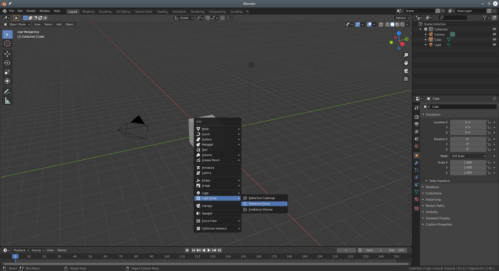
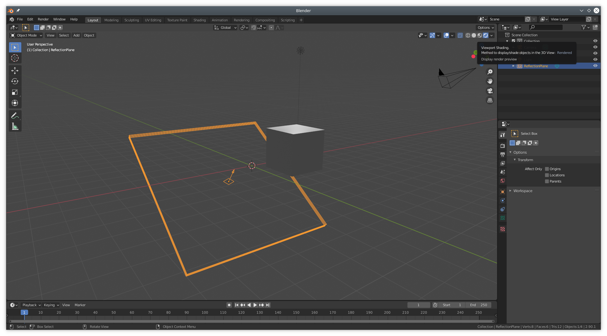
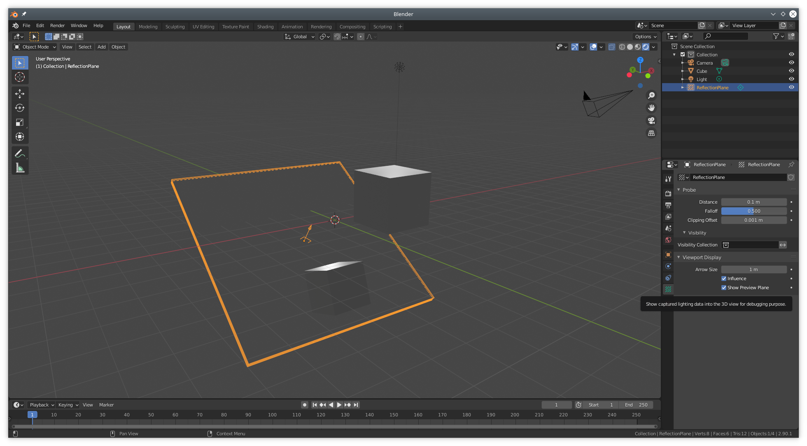
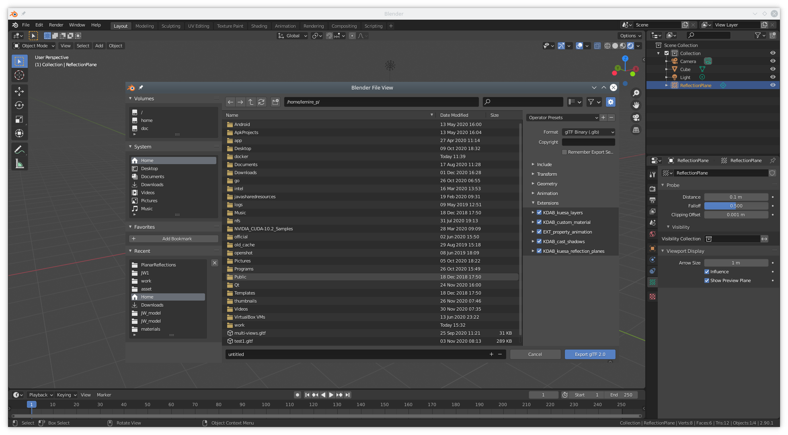

Kuesa provides support for reflection planes provided in glTF files through a custom glTF extension.
Assuming the Kuesa Studio Blender addon has been installed, the use of Reflection plane is straightforward.

In Blender, reflection planes are found unded the Light Probe section.
Once the plane has been positioned and scaled, make sure to select the Rendered Viewport Shading.

Next, go to the Object Data Properties tab of the Reflection Plane and enable the Show Preview Plane checkbox.

To export reflection planes, you only need to ensure that the KDAB_kuesa_reflection_planes extension has been selected in the export dialog.

When loading a glTF file using the GLTF2Importer referencing a SceneEntity, all reflection planes found while parsing while be added to the ReflectionPlaneCollection of the scene entity.
This then allows retrieving the ReflectionPlane instances by name, either directly from the ReflectionPlaneCollection if using C++ or though the use of the Asset element in QML.
Kuesa::SceneEntity *sceneEntity = new Kuesa::SceneEntity();
Kuesa::GLTF2Importer *importer = new Kuesa::GLTF2Importer();
QObject::connect(sceneEntity, Kuesa::SceneEntity::loadingDone, [&] () {
Kuesa::ReflectionPlane *plane = sceneEntity->reflectionPlane("ReflectionPlane");
...
});
importer->setSceneEntity(sceneEntity);
importer->setSource(QUrl("file:///reflections.gltf"));
import Kuesa 1.3 as Kuesa
Kuesa.SceneEntity {
id: scene
...
Kuesa.GLTF2Importer {
id: gltf2importer
sceneEntity: scene
source: "file:///reflections.gltf"
}
Kuesa.Asset {
id: sceneReflectionPlane
collection: scene.reflectionPlanes
name: "ReflectionPlane"
}
}
Once retrieved, the Kuesa::ReflectionPlane can be set on either the ForwardRenderer or the View instances defined in the framegraph.
It should then be rendered. Please note however that for more advanced cases, using Layers in conjunction with Views can give you more control on the order in which rendering takes place. For instance, you might want to render the reflections after having rendered a background plane.
Kuesa::SceneEntity *sceneEntity = new Kuesa::SceneEntity();
Kuesa::ForwardRenderer *renderer = new Kuesa::ForwardRenderer();
Kuesa::GLTF2Importer *importer = new Kuesa::GLTF2Importer();
QObject::connect(sceneEntity, Kuesa::SceneEntity::loadingDone, [&] () {
Kuesa::ReflectionPlane *plane = sceneEntity->reflectionPlane("ReflectionPlane");
renderer->addReflectionPlane(plane);
...
});
...
import Kuesa 1.3 as Kuesa
Kuesa.SceneEntity {
id: scene
...
components: [
RenderSettings {
activeFrameGraph: Kuesa.ForwardRenderer {
id: frameGraph
reflectionPlanes: [sceneReflectionPlane.node]
}
}
]
...
Kuesa.Asset {
id: sceneReflectionPlane
collection: scene.reflectionPlanes
name: "ReflectionPlane"
}
}